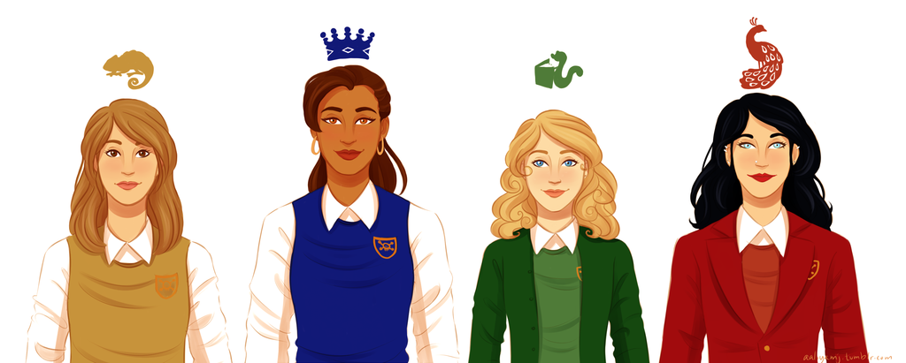

Cameron "Cammie" Ann Morgan is the main protagonist of the series and the daughter of Matthew Morgan (one of the best CIA agents to ever exist) and his wife, Rachel Morgan (ex CIA agent and currently the head mistress of the Gallagher Academy).
Physically Cammie is average, therefore her tendency to blend in to crowds, and from it her nickname ‘Chameleon’ this aspect of her makes for a great spy on the field. She is a smart and compassionate girl with very good leadership skills and an extremely strong will. Her strong head and capable mind are the reason of the books centering around some of the amazing -sometimes life threatening- adventures that her and her three best friends go through, either to conquer boys, save each other or take down the bad guys and save the world. No matter what goes on Cameron Morgan pulls herself, and the rest of the people around her through, making good reliable friends or horrible enemies along the way.
Daughter Grace Baxter and ABraham Baxter -two of MI6’s best spies- Bex is the first and only british Gallagher Girl, she is beautiful and smart just like Cammie, but carries a hell more of a punch. Cammie and Bex have been best friends for years, and share a room with two more of their best friends on the top floor of the Gallagher Academy. She has a rebellious attitude and a serious personality making her the perfect badass to play the part of the main character’s best friend, with her witty remarks and fast reactions she forms a great part of the team on the field and helps Cammie and their other friends save the day more than once.
Macey McHenry was a new student at the Gallagher Academy in the beginning of I'd Tell You I Love You But Then I'd Have to Kill You, and the Gallagher Academy was the last chance she had of attending a prep school. The main reason Macey decided to stay was that her parents would not know what Macey would truly be learning. Initially, Macey was not accepted into the Academy because of her attitude, illustrated by the fact that Bex puts her in a headlock without being punished by the other girls. Macey ended up being accepted because she is a descendant of Gillian Gallagher. She took the fourth and final place in Cammie’s room, minorly upsetting the other girls because of their loss of space (including their bean bag corner) and Macey's general behavior. She is more accepted after she helped Cammie, Liz, and Bex decode Josh’s boy behavior due to Macey's greater experience with boys in exchange for tutoring in her subjects, which she needs if she wants to catch up to her real grade level. During the rest of the books her relationship with her roomates develops, making Macey an important part of the group and one of the main characters in the series.
Elizabeth "Liz" Sutton is one of Cammie's best friends in the Gallagher Girls series. She is one of the few students whose parents aren't spies in any way, and is one of the smartest people on the planet. She is the smallest of her friends physically, and not good at work on the field, but perfect for the work behind the scenes, providing her team of friends with amazing gadgets and intel on just about anything. Though more naïve than her friends she definitely has the biggest heart, not to mention the clumsiest habits, causing her catch phrase to be “Oopsie Daisy” even though she knows how to curse in fourteen different languages.
Zachary "Zach" Goode is first introduced in book two, while he is in 10th grade.
Zach is a student at the Blackthorne Institute for Troubled Young Men,and has knowledge of assault rifles(and other guns) and various forms of torture, as implicated by the information shared by Zach in Out of Sight, Out of Time ("Why didn't you let me kill him? That's what we are trained to do"). In the books he is Cammie's main romantic interest, although her feelings towards him are unclear until he kissed her in the main hall at the end of the second book. He is the son of Catherine Goode, who is the leader of a splinter group within the Circle of Cavan that is dedicated to finding/retrieving a list of names of all the key members in the Circle.